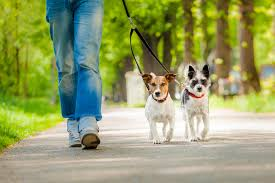
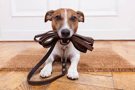

- Group Walks: Join one of our fun and social group walks
where your dog can socialize with other friendly pups while
exploring the sights and smells of the neighborhood. Our
experienced dog walkers lead small groups of well-matched
dogs on exciting adventures, providing exercise, mental
stimulation, and plenty of tail-wagging fun.
- Private Walks: For dogs who prefer one-on-one attention or
have special needs, we offer private walks tailored to their
individual requirements. Whether your dog needs a leisurely
stroll around the block or a brisk walk to burn off extra
energy, our dedicated walkers are here to cater to their
specific needs and preferences.
- Senior Dog Strolls: As dogs age, they may require gentler
exercise and more frequent breaks. Our senior dog strolls
are tailored to meet the needs of older dogs, providing a
relaxed pace, comfortable routes, and extra attention to
ensure their comfort and safety.
- Additional Services: In addition to our standard walking
services, we also offer pet sitting, feeding, and basic
grooming services upon request. Whether you need
someone to check in on your pet while you're at work or
care for them while you're away on vacation, we've got you
covered.

